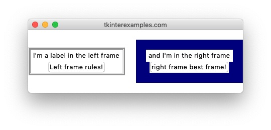
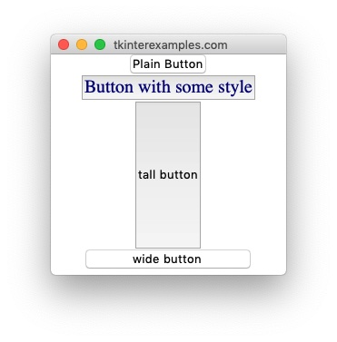

Widgets
tkinter offers numerous widgets that allow your users to interact with your application
in many different ways.
Label
The Label element is used to display text and images.

Frame
The Frame element is used as a container for other elements.

Button
The Button element is used to create clickable, event-performing buttons inside an application.
